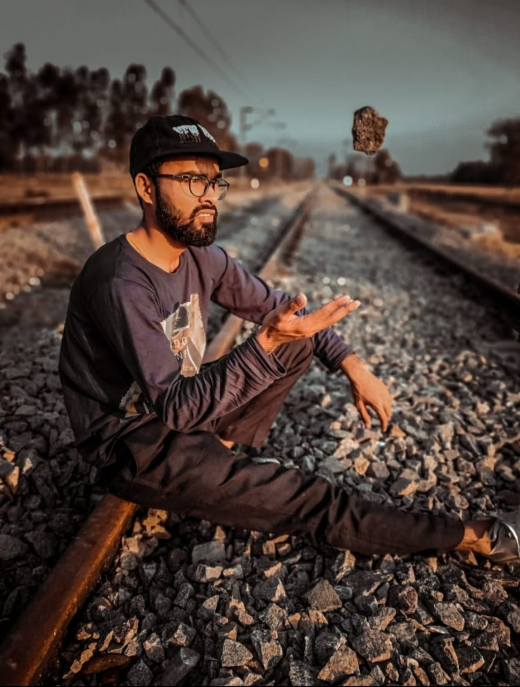

Ashish Pratap Singh

Nitihis

Roshna

Welcome to SSG! We're thrilled to have you here and appreiate your interest in our social service group. At SSG, our mission is to make a positive impact in the community through our dedicated efforts and initiatives. Through our various events and collaborations, we strive to address social issues and create meaningful change. We believe in the power of collective action and the ability of individuals to make a difference. Together we can create a better future for all.
Explore our website to learn more about our ongoing projects, upcoming events, and volunteer opportunities. Whether you're passionate about environmental conservation, education, community development, or other social causes, there's a place for you in our SSG.

On the 22nd of February 2023, blood donation drive was held in partnership with the Maatram Educational and Charitable Trust-run Indian Voluntary Blood Bank at our college.
The primary aim of this event was to encourage a sense of responsibility and motivation among students, faculty, and staff members to donate blood and become an active participant in the noble cause of saving lives.

A cleanliness drive was organized by Team SSG on 15th April 2023. This event was conducted to spread awareness about the importance of keeping your surrounding clean at all times, and to lead by example.
The volunteers were asked to assemble in front of Ashwatha Hostel at 6am, where they were then divided into groups and assigned one coordinator each. A total of five groups went around the campus to pick up and throw away any and all visible waste. Gloves and garbage bags were provided to all volunteers.